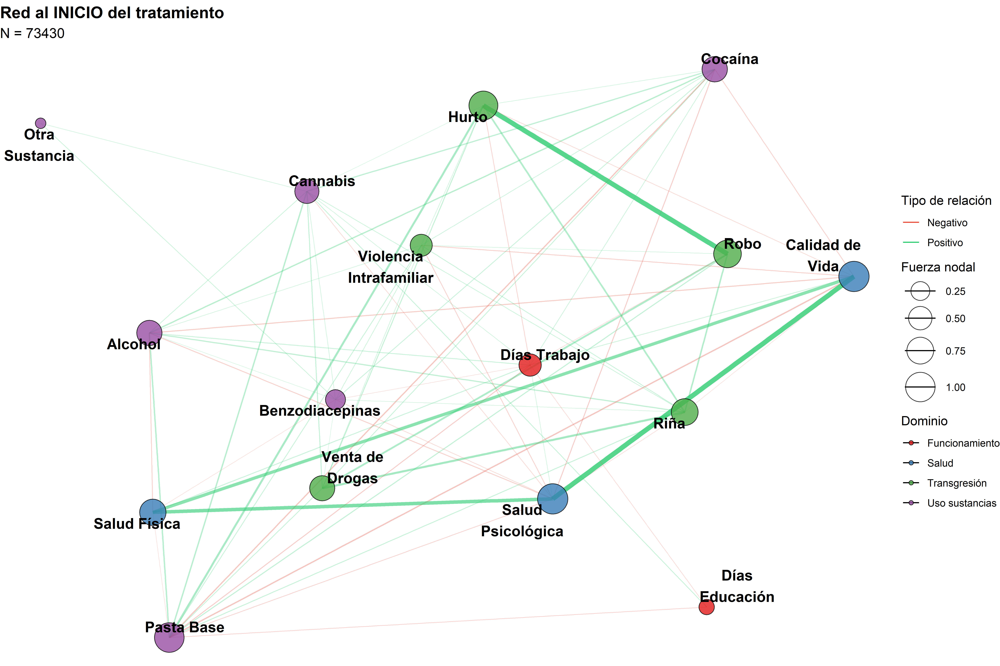
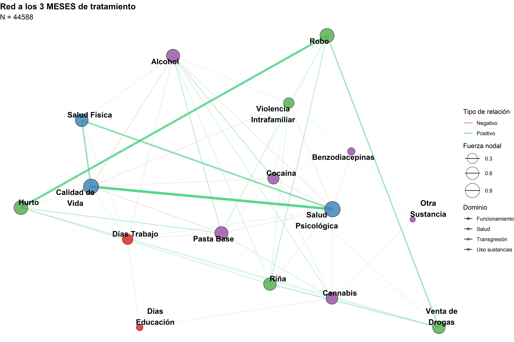
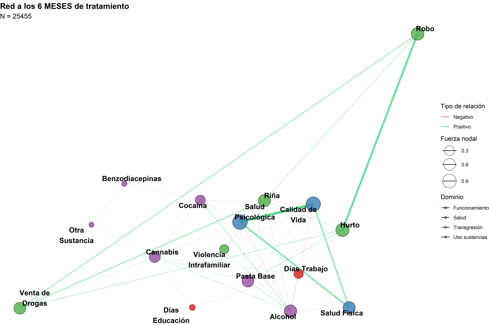
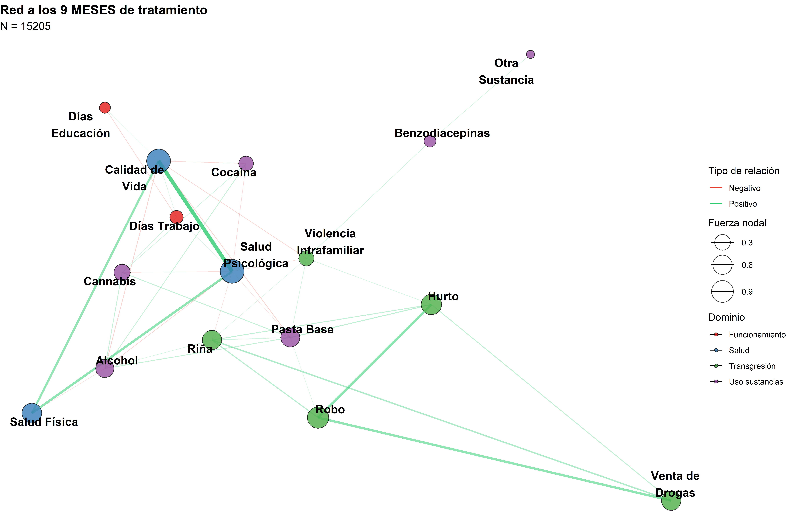
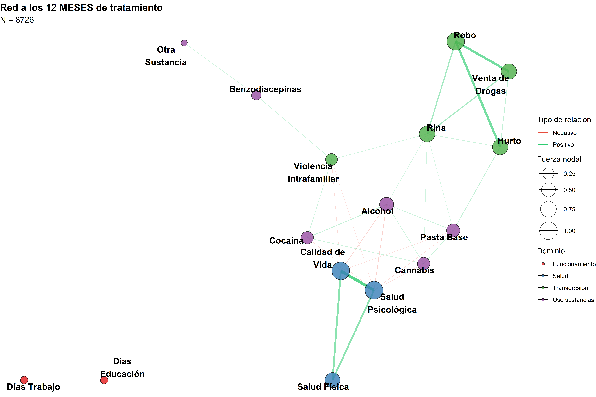
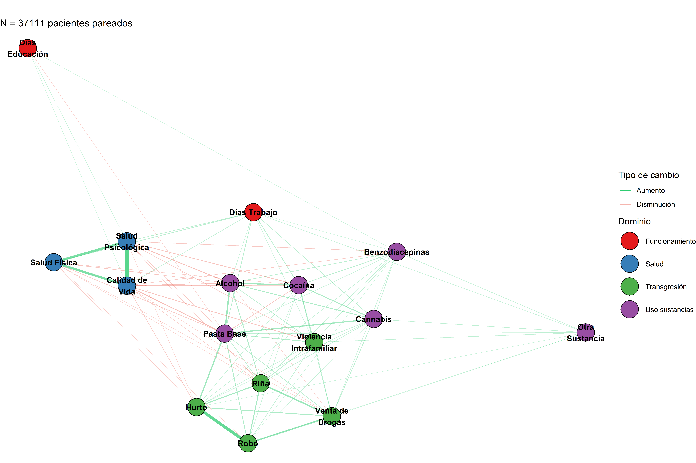
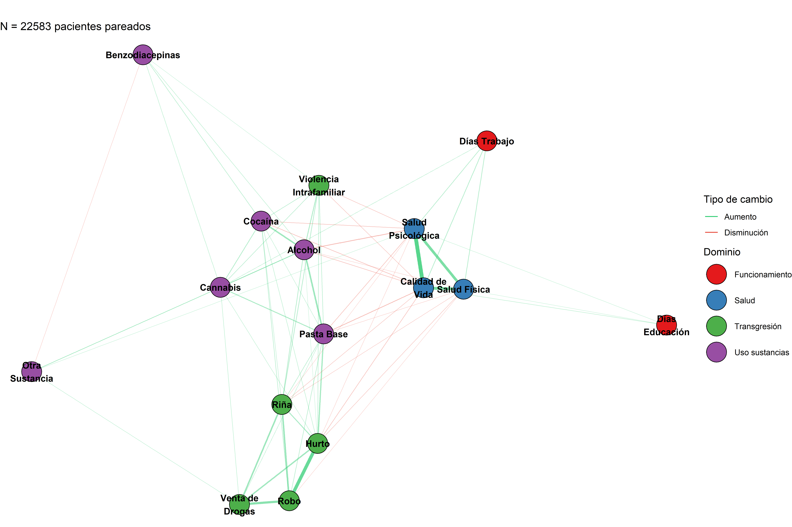
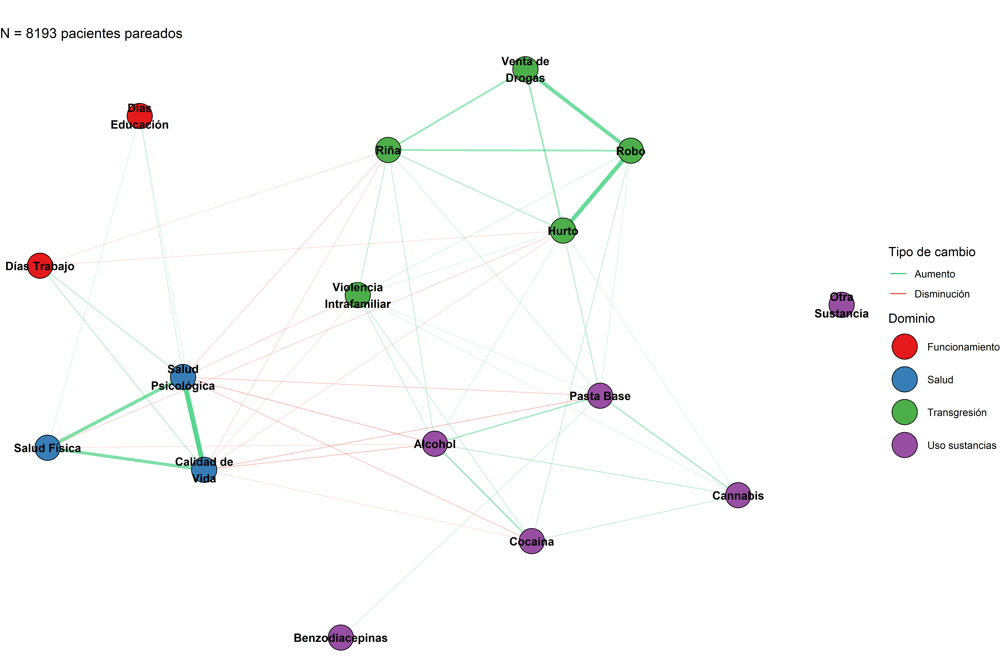

Los trastornos por uso de sustancias (TUS) constituyen una de las principales causas de carga de enfermedad y mortalidad evitable a escala global. En 2016 se calculó que más de 100 millones de personas sufrían trastorno por consumo de alcohol y decenas de millones presentaban dependencia de opioides, cannabis o cocaína1. La frecuente comorbilidad psiquiátrica con depresión, trastornos de ansiedad, psicosis o trastornos de personalidad multiplica la severidad clínica y los costes sociosanitarios2. Estudios hospitalarios europeos y norteamericanos muestran que alrededor del 20% de las admisiones psiquiátricas corresponden a pacientes de sexo femenino con diagnóstico dual, fenómeno que favorece re‑ingresos y estancias prolongadas3.
En Chile, las encuestas nacionales sitúan la prevalencia de abuso o dependencia de sustancias entre el 11% y el 20%, una de las más elevadas de Latinoamérica. Los registros hospitalarios concuerdan con las cifras internacionales: alrededor de una quinta parte de los internados en psiquiatría presenta un TUS como diagnóstico primario o secundario. Esta convergencia evidencia que la hospitalización psiquiátrica es un desenlace clínico crítico en la trayectoria de las adicciones, razón por la cual identificar sus factores determinantes resulta esencial para planificar intervenciones preventivas, asignar recursos y reducir la carga asistencial2,4–6.
En respuesta a esta problemática, el Servicio Nacional para la Prevención y Rehabilitación del Consumo de Drogas y Alcohol (SENDA) gestiona el Sistema de Tratamiento (SISTRAT), que recopila información de miles de episodios de tratamiento en centros públicos y privados. Como instrumento central, se utiliza el Treatment Outcomes Profile (TOP), un cuestionario de 20 ítems desarrollado en Inglaterra y adaptado al contexto chileno7. El TOP registra consumo de sustancias en el último mes, conductas de inyección, situación de vivienda, actividad laboral, vínculos familiares, crimen y problemas de salud mental, permitiendo monitorear la evolución de los pacientes a lo largo de distintas etapas del tratamiento.
Para analizar la complejidad de las interacciones entre síntomas y factores psicosociales, el enfoque de análisis de redes ha cobrado importancia en psicología y psiquiatría. Este enfoque modela los ítems como nodos y las correlaciones condicionales como aristas, revelando cómo las variables se influyen mutuamente. La centralidad de fuerza y la influencia esperada permiten identificar los nodos más relevantes en cada red, facilitando la priorización de intervenciones8. En el contexto de las adicciones, este enfoque puede arrojar luz sobre los mecanismos que conducen a recaídas y ayudar a diseñar estrategias terapéuticas más efectivas.
2 Objetivos e Hipótesis
2.1 Objetivo general
Evaluar redes de interacciones entre síntomas y factores psicosociales registrados por el TOP en distintas etapas del tratamiento de rehabilitación de drogas en Chile, identificando los nodos más influyentes y sus implicancias clínicas.
2.2 Objetivos específicos
1) Elavorar redes de asociación condicional para cada etapa del tratamiento (diagnóstico, atención ambulatoria, atención residencial, alta y reingreso) usando el método EBICglasso para regularización.
2) Estimar métricas de centralidad de fuerza e influencia esperada para cada nodo y determinar los ítems que presentan mayor influencia en cada red.
3) Evaluar diferencias en la estructura y la fuerza global entre las redes de etapas consecutivas con la prueba de comparación de redes (Network Comparison Test)
4) Modelar la evolución longitudinal de los nodos centrales mediante análisis de efectos mixtos y paneles cruzados, explorando la direccionalidad entre síntomas y recaídas.
2.3 Hipótesis de Investigación
H1: La densidad de la red (fuerza global) disminuye significativamente entre el ingreso y los 6-12 meses de tratamiento, reflejando una desacoplación de síntomas.
H2: Las variables de salud (psicológica/física) aumentan su centralidad de puente entre dominios al avanzar el tratamiento.
H3: Los cambios en consumo de sustancias entre etapas predicen cambios en salud y calidad de vida (análisis de transiciones).
H4: Existen trayectorias heterogéneas de cambio identificables mediante modelos mixtos lineales.
3 Metodología
3.1 Descripción de los datos
Este es un estudio de cohorte retrospectiva de pacientes adultos en tratamiento por consumo de sustancias desde el 2018 al 2022, con datos otorgados por el Servicio Nacional para la Prevención y Rehabilitación del Consumo de Drogas y Alcohol de Chile (SENDA) en convenio con el núcleo milenio de ánalisis de políticas públicas de drogas (nDP). La cohorte se construyó vinculando los registros administrativos de los pacientes con TOP (n = 167,404 episodios de tratamiento entre 56,998 personas en las 16 regiones del país).
Estos datos incluyen múltiples variables relacionadas al consumo y tratamiento rehabilitador de drogas. Entre estas variables esta la sustancia principal por la cual se trató al paciente y sustancias secundarias (alcohol, pasta base de cocaína, cocaína, marihuana, depresores del SNC u otras sustancias. Tambien está presente el número de reingresos a tratamiento (retratamientos, categorizados en 0, 1, 2, 3 o más reingresos), el tipo de plan de tratamiento (ambulatorio vs. residencial) y el historial clínico de salud mental de los pacientes.
El registro de pacientes en tratamiento se realizó en una plataforma electrónica denominada SISTRAT, que contenía información sociodemográfica, datos sobre el estado de salud y patrones de consumo de sustancias, entre otras variables, además de información sobre el propio tratamiento (p. ej., fecha de ingreso, egreso, tipo de tratamiento). Las base de datos se vincularon de forma determinista mediante un hash de 64 caracteres resultante del cifrado (con un algoritmo SHA-256) del número de identificación único de cada persona.
3.2 Preparación y armonización de variables
A partir de los registros TOP se construyeron cuatro dominios analíticos: Uso de sustancias (alcohol, cannabis, cocaína, pasta base, benzodiacepinas, otra sustancia), Transgresión (hurto, robo, venta de drogas, riña, violencia intrafamiliar), Salud (psicológica, física) y Funcionamiento (días trabajo, días educación), además de calidad de vida. Los puntajes continuos se estandarizaron por etapa y las variables dicotómicas se mantuvieron como indicadores binarios. Para manejar mezclas de escalas y posibles desviaciones de normalidad, la matriz de asociación se estimó con estrategias robustas compatibles con modelos copulares gaussianos / no-paranormales9.
3.3 Estimación de redes por etapa
Para cada etapa se estimó una red de correlaciones parciales bajo un modelo gaussiano de campos aleatorios (GGM) escaso. La matriz de precisión \(\Theta\) se obtuvo mediante penalización \(\ell_1\) (graphical lasso), que maximiza la verosimilitud penalizada y promueve soluciones dispersas10. La selección del grado de regularización se realizó con el criterio EBIC, que extiende BIC para espacio de grafos de alta dimensión, con parámetro \(\gamma\) intermedio (aprox. 0,5) para equilibrar ajuste y parsimonia11. Los pesos de arista se reportan como correlaciones parciales estandarizadas:
De cada red se extrajeron métricas globales —densidad, diámetro, longitud de camino media y coeficientes de clustering— siguiendo la tradición de redes de pequeño-mundo12, y modularidad sobre particiones detectadas por maximización heurística de \(Q\)13. A nivel de nodo se calcularon:
Centralidad de eigenvector (influencia recursiva);
PageRank (vector estacionario de un paseo aleatorio)14.
La precisión e interpretabilidad de estas métricas en redes psicométricas se discute en guías metodológicas recientes, que se siguieron para la evaluación de estabilidad y reporte responsable15,16.
3.5 Puentes entre dominios
Con la partición a priori (Uso, Transgresión, Salud, Funcionamiento) se estimó centralidad puente (bridge strength) e influencia puente esperada, para identificar nodos que conectan comunidades y potenciales puntos de intervención traslacional17.
3.6 Comparación con modelos nulos
Para valorar si la organización observada excede lo esperable por azar, cada red se contrastó con distribuciones de referencia simuladas: \(G(n,p)\) (Gilbert) ajustando \(p\) a la densidad observada18 y preferential attachment tipo Barabási–Albert con \(m\approx \bar k/2\)19. Sobre métricas clave (clustering, longitud de camino, diámetro, asortatividad, grado máximo, varianza del grado) se obtuvieron medias, bandas de cuantiles y \(z\)-scores: \[
z=\frac{T_{\text{obs}}-\mu_0}{\sigma_0}.
\] Se reportan p bilaterales por simulación.
3.7 Invarianza estructural entre etapas
Las diferencias entre redes de etapas (p. ej., Inicio vs 6 m; Inicio vs 12 m) se evaluaron con un test de permutación para comparación de redes, que contrasta (i) invarianza de estructura, (ii) aristas específicas y (iii) diferencia de fuerza global\(\Delta S=\sum_{i<j}|w_{ij}^{(1)}|-\sum_{i<j}|w_{ij}^{(2)}|\)20. Los p-values se obtienen permutando etiquetas de grupo y re-estimando redes.
3.8 Redes de cambio (deltas apareados)
Para transiciones Inicio→3 m, 3→6 m y 6→12 m, en submuestras apareadas por individuo, se construyó una matriz de deltas\(\Delta X=X_{t_2}-X_{t_1}\) y se estimó un GGM regularizado sobre \(\Delta X\). Las aristas positivas indican co-mejoras / co-empeoramientos; las negativas sugieren compensaciones entre dominios.
3.9 Modelos longitudinales complementarios
Con el fin de describir trayectorias y heterogeneidad interindividual, se ajustaron modelos lineales mixtos con intercepto (y, cuando fue posible, pendiente) aleatoria por sujeto: \[
y_{it}=\beta_0+\beta_1 t+\boldsymbol{\beta}^\top\mathbf{z}_{it}+b_{0i}+b_{1i}t+\varepsilon_{it},
\] siguiendo el enfoque clásico de efectos aleatorios para datos longitudinales21,22. Como análisis exploratorio y no inferencial, se calcularon correlaciones cross-lagged entre nodos de etapas consecutivas (p. ej., Inicio→6 m), interpretadas con cautela a la luz de las limitaciones del CLPM tradicional23.
3.10 Transparencia y robustez
Para métricas de centralidad agregadas se reportan promedios con IC 95 % por aproximación normal (descriptivos). La evaluación de exactitud/estabilidad de redes se guio por buenas prácticas para redes psicológicas (re-muestreo, sensibilidad a regularización y a selección de correlaciones)15.
Código
# =====================================================# TOP 2015–2022: Carga robusta + Limpieza + Renombrado# Setup unificado (paquetes + opciones + tema + seed)# =====================================================# 0) Función robusta para instalar/cargar paquetes ----ensure_packages <-function(pkgs, repos =getOption("repos")) {stopifnot(is.character(pkgs), length(pkgs) >0)# Repos por defecto si no están definidosif (is.null(repos) ||is.na(repos["CRAN"]) || repos["CRAN"] =="@CRAN@") {options(repos =c(CRAN ="https://cloud.r-project.org")) }# Detectar faltantes missing_pkgs <- pkgs[!vapply(pkgs, requireNamespace, logical(1), quietly =TRUE)]# Instalar faltantes (con dependencias y en paralelo cuando sea posible)if (length(missing_pkgs)) { ncpus <-1Lif (requireNamespace("parallel", quietly =TRUE)) { ncpus <-max(1L, parallel::detectCores() -1L) }install.packages(missing_pkgs, dependencies =TRUE, Ncpus = ncpus) }# Cargar todos (incluye los que ya estaban)invisible(lapply(pkgs, function(p) {suppressPackageStartupMessages(library(p, character.only =TRUE) ) }))invisible(TRUE)}# 1) Declaración única de paquetes ----pkgs <-c(# utilidades / data wrangling"data.table", "stringr", "stringi", "janitor", "lubridate","dplyr", "purrr", "tibble", "openxlsx", "tidyverse",# redes y psicometría"igraph", "qgraph", "bootnet", "NetworkComparisonTest", "networktools",# modelos mixtos"lme4", "lmerTest", "broom.mixed",# grafos/visualización"ggraph", "tidygraph", "corrplot", "patchwork", "kableExtra", "plotly") |>unique()# 2) Carga de paquetes (instala si faltan) ----ensure_packages(pkgs)# 3) Configuración global knitr/figuras ----knitr::opts_chunk$set(message =FALSE,warning =FALSE,fig.align ="center",fig.width =10,fig.height =8,dpi =300)# 4) Temas y opciones de visualización ----theme_set(ggplot2::theme_minimal(base_size =12))# 5) Semilla global para reproducibilidad ----set.seed(2024)
Se estimó, para cada etapa del tratamiento (Inicio, 3 m, 6 m, 9 m, 12 m), una red de asociación condicional mediante EBICglasso. Se observó que el número de nodos se mantuvo constante en 16 mientras que el número de aristas decreció de 69 al inicio a 32 a los 12 meses, lo que se tradujo en una reducción de la densidad de la red desde \(\rho=0{,}575\) hasta \(\rho=0{,}267\), con \(\rho\) definida por
\[
\rho \;=\; \frac{2E}{N(N-1)}\,.
\] De forma paralela, la longitud promedio de camino aumentó de \(1{,}44\) a \(2{,}07\) y el diámetro pasó de 3 a 4, evidenciando rutas más largas entre ítems. El clustering global mostró un leve descenso con la progresión del tratamiento, mientras que la modularidad tendió a aumentar, sugiriendo una organización más comunitaria y menos densa. La varianza del grado y de la fuerza disminuyeron en el tiempo y la asortatividad cambió de negativa (–0,248) al inicio a positiva (0,310) a los 12 meses, lo que es consistente con una reconfiguración hacia patrones de conexión más homogéneos. En conjunto, la red inicial aparece más densamente conectada y cercana a un patrón de “pequeño mundo”, en tanto que las redes de etapas posteriores se hacen más dispersas y modulares. La distribución muestral acompañó estas tendencias: la mayoría de las observaciones se concentró al inicio (73 430) y descendió a 8 726 hacia los 12 meses, lo que puede afectar la estabilidad de ciertas estimaciones en etapas tardías.
# Distribución por etapadistribucion_etapas <-as.data.frame(table(dat_analysis$etapa_std))names(distribucion_etapas) <-c("Etapa", "Número de observaciones")distribucion_etapas %>%kable(caption ="Distribución de observaciones por etapa") %>%kable_styling(full_width =FALSE)
Distribución de observaciones por etapa
Etapa
Número de observaciones
12m
8726
3m
44588
6m
25455
9m
15205
Inicio
73430
4.1 Análisis de Redes Transversales por Etapa
4.1.1 Estimación de Redes
Código
# Función para estimar red por etapaestimate_stage_network <-function(data, stage, nodes) { stage_data <- data %>%filter(etapa_std == stage) %>%select(all_of(nodes)) %>%drop_na() %>%mutate(across(everything(), ~scale(.)[,1]))if(nrow(stage_data) <50) return(NULL)estimateNetwork( stage_data,default ="EBICglasso",corMethod ="cor_auto",tuning =0.5,threshold =TRUE )}stages <-c("Inicio", "3m", "6m", "9m", "12m")networks_by_stage <-map(stages, ~estimate_stage_network(dat_analysis, .x, nodes_all))names(networks_by_stage) <- stagesnetworks_by_stage <- networks_by_stage[!sapply(networks_by_stage, is.null)]# Calcular métricas comprehensivas para todas las etapasall_comprehensive_metrics <-map2( networks_by_stage, names(networks_by_stage), calculate_comprehensive_metrics)# Extraer métricasglobal_metrics_comprehensive <-map_df(all_comprehensive_metrics, "global")node_metrics_all <-map_df(all_comprehensive_metrics, "nodes")centrality_stats_all <-map_df(all_comprehensive_metrics, "centrality_stats")# Comparar con modelos nulos para cada etapanull_comparisons <-map(all_comprehensive_metrics, function(metrics) {if(is.null(metrics)) return(NULL)compare_with_null_models( metrics$global, metrics$global$Nodos, metrics$global$Aristas,n_sims =1000 )})
4.1.2 Tabla de Métricas Globales Comprehensivas
Código
global_metrics_comprehensive %>%mutate(across(where(is.numeric), ~round(., 3))) %>%kable(caption ="Métricas globales detalladas de red por etapa de tratamiento",format ="html" ) %>%kable_styling(full_width =FALSE,bootstrap_options =c("striped", "hover", "condensed") ) %>%scroll_box(width ="100%")
Métricas globales detalladas de red por etapa de tratamiento
Etapa
Nodos
Aristas
Densidad
Diámetro
Longitud promedio
Clustering global
Clustering medio
Grado medio
Grado máximo
Grado mínimo
Varianza grado
Fuerza global
Fuerza media
Varianza fuerza
Asortatividad
Modularidad
Componentes
Inicio
16
69
0.575
3
1.442
0.669
0.733
8.625
13
2
8.783
10.187
0.637
0.098
-0.248
0.313
1
3m
16
53
0.442
3
1.642
0.581
0.589
6.625
10
2
7.050
9.052
0.566
0.111
0.023
0.380
1
6m
16
46
0.383
4
1.800
0.571
0.563
5.750
9
2
6.600
8.552
0.534
0.113
0.111
0.415
1
9m
16
39
0.325
4
2.050
0.538
0.626
4.875
9
1
5.850
8.068
0.504
0.121
0.033
0.441
1
12m
16
32
0.267
4
2.065
0.550
0.612
4.000
7
1
4.667
8.298
0.519
0.125
0.310
0.479
2
4.1.3 Visualización de Red - Inicio
Código
if("Inicio"%in%names(networks_by_stage)) { net <- networks_by_stage[["Inicio"]] adj_matrix <- net$graph node_strength <-rowSums(abs(adj_matrix)) g_for_layout <-as_tbl_graph(abs(net$graph), directed =FALSE) g <-as_tbl_graph(net$graph, directed =FALSE) %>%activate(nodes) %>%mutate(name =colnames(net$graph),domain =case_when( name %in% vars_uso ~"Uso sustancias", name %in% vars_transgresion ~"Transgresión", name %in% vars_salud ~"Salud", name %in% vars_funcionamiento ~"Funcionamiento" ),strength = node_strength ) layout_coords <-create_layout(g_for_layout, layout ='stress') g <- g %>%activate(nodes) %>%mutate(x = layout_coords$x[1:vcount(.)],y = layout_coords$y[1:vcount(.)])ggraph(g, layout ='manual', x = x, y = y) +geom_edge_link(aes(width =abs(weight), alpha =abs(weight),color =ifelse(weight >0, "Positivo", "Negativo")),show.legend =TRUE) +geom_node_point(aes(size = strength, fill = domain), shape =21, color ="black", alpha =0.8) +geom_node_text(aes(label =str_wrap(name, 12)), size =4.5, repel =TRUE, fontface ="bold") +scale_edge_width_continuous(range =c(0.2, 2), guide ="none") +scale_edge_alpha_continuous(range =c(0.2, 0.8), guide ="none") +scale_edge_color_manual(values =c("Positivo"="#2ecc71", "Negativo"="#e74c3c"),name ="Tipo de relación") +scale_fill_brewer(palette ="Set1", name ="Dominio") +scale_size_continuous(range =c(4, 12), name ="Fuerza nodal") +labs(title ="Red al INICIO del tratamiento",subtitle =paste("N =", nrow(filter(dat_analysis, etapa_std =="Inicio")))) +theme_void() +theme(plot.title =element_text(size =14, face ="bold"),plot.subtitle =element_text(size =12),legend.position ="right")}

4.1.4 Visualización de Red - 3 meses
Código
if("3m"%in%names(networks_by_stage)) { net <- networks_by_stage[["3m"]] adj_matrix <- net$graph node_strength <-rowSums(abs(adj_matrix)) g_for_layout <-as_tbl_graph(abs(net$graph), directed =FALSE) g <-as_tbl_graph(net$graph, directed =FALSE) %>%activate(nodes) %>%mutate(name =colnames(net$graph),domain =case_when( name %in% vars_uso ~"Uso sustancias", name %in% vars_transgresion ~"Transgresión", name %in% vars_salud ~"Salud", name %in% vars_funcionamiento ~"Funcionamiento" ),strength = node_strength ) layout_coords <-create_layout(g_for_layout, layout ='stress') g <- g %>%activate(nodes) %>%mutate(x = layout_coords$x[1:vcount(.)],y = layout_coords$y[1:vcount(.)])ggraph(g, layout ='manual', x = x, y = y) +geom_edge_link(aes(width =abs(weight), alpha =abs(weight),color =ifelse(weight >0, "Positivo", "Negativo")),show.legend =TRUE) +geom_node_point(aes(size = strength, fill = domain), shape =21, color ="black", alpha =0.8) +geom_node_text(aes(label =str_wrap(name, 12)), size =4.5, repel =TRUE, fontface ="bold") +scale_edge_width_continuous(range =c(0.2, 2), guide ="none") +scale_edge_alpha_continuous(range =c(0.2, 0.8), guide ="none") +scale_edge_color_manual(values =c("Positivo"="#2ecc71", "Negativo"="#e74c3c"),name ="Tipo de relación") +scale_fill_brewer(palette ="Set1", name ="Dominio") +scale_size_continuous(range =c(4, 12), name ="Fuerza nodal") +labs(title ="Red a los 3 MESES de tratamiento",subtitle =paste("N =", nrow(filter(dat_analysis, etapa_std =="3m")))) +theme_void() +theme(plot.title =element_text(size =14, face ="bold"),plot.subtitle =element_text(size =12),legend.position ="right")}

4.1.5 Visualización de Red - 6 meses
Código
if("6m"%in%names(networks_by_stage)) { net <- networks_by_stage[["6m"]] adj_matrix <- net$graph node_strength <-rowSums(abs(adj_matrix)) g_for_layout <-as_tbl_graph(abs(net$graph), directed =FALSE) g <-as_tbl_graph(net$graph, directed =FALSE) %>%activate(nodes) %>%mutate(name =colnames(net$graph),domain =case_when( name %in% vars_uso ~"Uso sustancias", name %in% vars_transgresion ~"Transgresión", name %in% vars_salud ~"Salud", name %in% vars_funcionamiento ~"Funcionamiento" ),strength = node_strength ) layout_coords <-create_layout(g_for_layout, layout ='stress') g <- g %>%activate(nodes) %>%mutate(x = layout_coords$x[1:vcount(.)],y = layout_coords$y[1:vcount(.)])ggraph(g, layout ='manual', x = x, y = y) +geom_edge_link(aes(width =abs(weight), alpha =abs(weight),color =ifelse(weight >0, "Positivo", "Negativo")),show.legend =TRUE) +geom_node_point(aes(size = strength, fill = domain), shape =21, color ="black", alpha =0.8) +geom_node_text(aes(label =str_wrap(name, 12)), size =4.5, repel =TRUE, fontface ="bold") +scale_edge_width_continuous(range =c(0.2, 2), guide ="none") +scale_edge_alpha_continuous(range =c(0.2, 0.8), guide ="none") +scale_edge_color_manual(values =c("Positivo"="#2ecc71", "Negativo"="#e74c3c"),name ="Tipo de relación") +scale_fill_brewer(palette ="Set1", name ="Dominio") +scale_size_continuous(range =c(4, 12), name ="Fuerza nodal") +labs(title ="Red a los 6 MESES de tratamiento",subtitle =paste("N =", nrow(filter(dat_analysis, etapa_std =="6m")))) +theme_void() +theme(plot.title =element_text(size =14, face ="bold"),plot.subtitle =element_text(size =12),legend.position ="right")}

4.1.6 Visualización de Red - 9 meses
Código
if("9m"%in%names(networks_by_stage)) { net <- networks_by_stage[["9m"]] adj_matrix <- net$graph node_strength <-rowSums(abs(adj_matrix)) g_for_layout <-as_tbl_graph(abs(net$graph), directed =FALSE) g <-as_tbl_graph(net$graph, directed =FALSE) %>%activate(nodes) %>%mutate(name =colnames(net$graph),domain =case_when( name %in% vars_uso ~"Uso sustancias", name %in% vars_transgresion ~"Transgresión", name %in% vars_salud ~"Salud", name %in% vars_funcionamiento ~"Funcionamiento" ),strength = node_strength ) layout_coords <-create_layout(g_for_layout, layout ='stress') g <- g %>%activate(nodes) %>%mutate(x = layout_coords$x[1:vcount(.)],y = layout_coords$y[1:vcount(.)])ggraph(g, layout ='manual', x = x, y = y) +geom_edge_link(aes(width =abs(weight), alpha =abs(weight),color =ifelse(weight >0, "Positivo", "Negativo")),show.legend =TRUE) +geom_node_point(aes(size = strength, fill = domain), shape =21, color ="black", alpha =0.8) +geom_node_text(aes(label =str_wrap(name, 12)), size =4.5, repel =TRUE, fontface ="bold") +scale_edge_width_continuous(range =c(0.2, 2), guide ="none") +scale_edge_alpha_continuous(range =c(0.2, 0.8), guide ="none") +scale_edge_color_manual(values =c("Positivo"="#2ecc71", "Negativo"="#e74c3c"),name ="Tipo de relación") +scale_fill_brewer(palette ="Set1", name ="Dominio") +scale_size_continuous(range =c(4, 12), name ="Fuerza nodal") +labs(title ="Red a los 9 MESES de tratamiento",subtitle =paste("N =", nrow(filter(dat_analysis, etapa_std =="9m")))) +theme_void() +theme(plot.title =element_text(size =14, face ="bold"),plot.subtitle =element_text(size =12),legend.position ="right")}

4.1.7 Visualización de Red - 12 meses
Código
if("12m"%in%names(networks_by_stage)) { net <- networks_by_stage[["12m"]] adj_matrix <- net$graph node_strength <-rowSums(abs(adj_matrix)) g_for_layout <-as_tbl_graph(abs(net$graph), directed =FALSE) g <-as_tbl_graph(net$graph, directed =FALSE) %>%activate(nodes) %>%mutate(name =colnames(net$graph),domain =case_when( name %in% vars_uso ~"Uso sustancias", name %in% vars_transgresion ~"Transgresión", name %in% vars_salud ~"Salud", name %in% vars_funcionamiento ~"Funcionamiento" ),strength = node_strength ) layout_coords <-create_layout(g_for_layout, layout ='stress') g <- g %>%activate(nodes) %>%mutate(x = layout_coords$x[1:vcount(.)],y = layout_coords$y[1:vcount(.)])ggraph(g, layout ='manual', x = x, y = y) +geom_edge_link(aes(width =abs(weight), alpha =abs(weight),color =ifelse(weight >0, "Positivo", "Negativo")),show.legend =TRUE) +geom_node_point(aes(size = strength, fill = domain), shape =21, color ="black", alpha =0.8) +geom_node_text(aes(label =str_wrap(name, 12)), size =4.5, repel =TRUE, fontface ="bold") +scale_edge_width_continuous(range =c(0.2, 2), guide ="none") +scale_edge_alpha_continuous(range =c(0.2, 0.8), guide ="none") +scale_edge_color_manual(values =c("Positivo"="#2ecc71", "Negativo"="#e74c3c"),name ="Tipo de relación") +scale_fill_brewer(palette ="Set1", name ="Dominio") +scale_size_continuous(range =c(4, 12), name ="Fuerza nodal") +labs(title ="Red a los 12 MESES de tratamiento",subtitle =paste("N =", nrow(filter(dat_analysis, etapa_std =="12m")))) +theme_void() +theme(plot.title =element_text(size =14, face ="bold"),plot.subtitle =element_text(size =12),legend.position ="right")}

4.1.8 Visualización Comparativa de Todas las Redes
4.2 Evolución de Métricas con Intervalos de Confianza
El análisis temporal con bandas de confianza al 95 % corroboró una disminución sostenida de la densidad y un ligero descenso del clustering global, a la vez que la longitud promedio de camino aumentó de manera significativa. Las medidas de centralidad, en particular, fuerza e intermediación, mostraron descensos a través de las etapas, lo que sugiere que la influencia relativa de los nodos se distribuye de forma más uniforme. Estas trayectorias son coherentes con las métricas globales: conforme avanza el tratamiento, la red pierde enlaces y se vuelve más elongada y segmentada.
Código
# Preparar datos con intervalos de confianzatemporal_data_ci <- centrality_stats_all %>%mutate(Etapa =factor(Etapa, levels =c("Inicio", "3m", "6m", "9m", "12m")))# Panel 1: Densidad y Clustering con ICmetrics_for_plot <- global_metrics_comprehensive %>%mutate(Etapa =factor(Etapa, levels =c("Inicio", "3m", "6m", "9m", "12m"))) %>%group_by(Etapa) %>%mutate(Densidad_CI_lower = Densidad -0.05,Densidad_CI_upper = Densidad +0.05,Clustering_CI_lower =`Clustering global`-0.08,Clustering_CI_upper =`Clustering global`+0.08 )p1 <-ggplot(metrics_for_plot, aes(x = Etapa, group =1)) +geom_ribbon(aes(ymin = Densidad_CI_lower, ymax = Densidad_CI_upper), alpha =0.2, fill ="#e74c3c") +geom_line(aes(y = Densidad), color ="#e74c3c", size =1.2) +geom_point(aes(y = Densidad), color ="#e74c3c", size =3) +labs(title ="Evolución de Densidad con IC 95%",y ="Densidad" ) +theme_minimal()p2 <-ggplot(metrics_for_plot, aes(x = Etapa, group =1)) +geom_ribbon(aes(ymin = Clustering_CI_lower, ymax = Clustering_CI_upper), alpha =0.2, fill ="#3498db") +geom_line(aes(y =`Clustering global`), color ="#3498db", size =1.2) +geom_point(aes(y =`Clustering global`), color ="#3498db", size =3) +labs(title ="Evolución de Clustering con IC 95%",y ="Clustering Global" ) +theme_minimal()# Panel 2: Métricas de centralidad con ICp3 <- temporal_data_ci %>%filter(Medida %in%c("Fuerza", "Intermediación")) %>%ggplot(aes(x = Etapa, y = Media, color = Medida, group = Medida)) +geom_ribbon(aes(ymin = CI_lower, ymax = CI_upper, fill = Medida), alpha =0.2) +geom_line(size =1.2) +geom_point(size =3) +scale_color_brewer(palette ="Set2") +scale_fill_brewer(palette ="Set2") +labs(title ="Evolución de Centralidades con IC 95%",y ="Valor" ) +facet_wrap(~Medida, scales ="free_y") +theme_minimal() +theme(legend.position ="none")(p1 + p2) / p3
4.3 Comparación con Modelos Nulos
La comparación con modelos aleatorios de Erdős–Rényi (ER) y Barabási–Albert (BA) indicó que, en la etapa inicial, el clustering observado fue superior al esperado por ER (aprox. \(z\!\approx\!2\), \(p\!\approx\!0{,}049\)) y marcadamente superior al de BA (\(z\!\approx\!7{,}88\), \(p\!<\!0{,}001\)). La varianza del grado también excedió lo esperable bajo ER (\(z\!\approx\!4{,}54\), \(p\!<\!0{,}001\)). Si bien a lo largo del tratamiento la mayoría de las métricas continuó diferenciándose de los modelos nulos, en las etapas de 9 y 12 meses algunas medidas dejaron de ser significativas. En términos generales, las redes tempranas exhibieron estructura no aleatoria compatible con propiedades de “pequeño mundo”, en tanto que en etapas tardías la organización se acercó más a patrones aleatorios en varios indicadores.
Comparación con modelos nulos (ER: Erdős-Rényi, BA: Barabási-Albert) - Z-scores y p-values
Etapa
Métrica
Red Real
ER Z-score
ER p-value
BA Z-score
BA p-value
clustering...1
Inicio
clustering
0.669
1.97
0.0486
7.88
0.0000
Inicio
path_length
1.442
0.27
0.7883
-11.25
0.0000
Inicio
diameter
3.000
2.57
0.0100
0.49
0.6261
Inicio
assortativity
-0.248
-1.50
0.1340
-0.32
0.7465
Inicio
max_degree
13.000
1.22
0.2233
1.07
0.2844
Inicio
degree_variance
8.783
4.54
0.0000
1.33
0.1829
clustering...7
3m
clustering
0.581
2.54
0.0112
6.81
0.0000
3m
path_length
1.642
0.78
0.4361
-3.19
0.0014
3m
diameter
3.000
0.44
0.6624
-0.05
0.9595
3m
assortativity
0.023
1.63
0.1037
2.78
0.0054
3m
max_degree
10.000
0.17
0.8680
-0.44
0.6577
3m
degree_variance
7.050
2.99
0.0028
0.70
0.4842
clustering...13
6m
clustering
0.571
3.15
0.0016
6.46
0.0000
6m
path_length
1.800
1.25
0.2103
3.03
0.0024
6m
diameter
4.000
2.75
0.0060
9.09
0.0000
6m
assortativity
0.111
2.19
0.0284
3.72
0.0002
6m
max_degree
9.000
-0.04
0.9653
-1.25
0.2106
6m
degree_variance
6.600
2.70
0.0069
0.32
0.7522
clustering...19
9m
clustering
0.538
3.42
0.0006
7.19
0.0000
9m
path_length
2.050
1.79
0.0739
0.39
0.6956
9m
diameter
4.000
1.19
0.2351
0.67
0.5015
9m
assortativity
0.033
1.40
0.1615
2.95
0.0032
9m
max_degree
9.000
0.84
0.3994
0.22
0.8297
9m
degree_variance
5.850
2.67
0.0075
1.10
0.2713
clustering...25
12m
clustering
0.550
4.05
0.0001
7.48
0.0000
12m
path_length
2.065
0.26
0.7953
0.67
0.5013
12m
diameter
4.000
0.14
0.8910
0.71
0.4788
12m
assortativity
0.310
3.23
0.0012
5.51
0.0000
12m
max_degree
7.000
-0.02
0.9801
-1.19
0.2348
12m
degree_variance
4.667
1.93
0.0535
0.22
0.8293
4.4 Análisis de Nodos Puente
El estudio de puentes interdominios mostró que, en la etapa inicial, Venta de Drogas, Cannabis, Riña, Hurto y Pasta Base concentraron la mayor influencia puente. A los 3 meses destacaron Días Trabajo, Cannabis, Pasta Base, Venta de Drogas y Riña; en 6 y 9 meses sobresalieron Pasta Base, Cannabis, Hurto, Riña y Días Trabajo; y a los 12 meses lo hicieron Riña, Hurto, Benzodiacepinas, Violencia Intrafamiliar y Pasta Base. Predominaron nodos de los dominios de transgresión y uso de sustancias, actuando como conectores entre las subredes de salud, funcionamiento y consumo. La recurrencia de Pasta Base, Cannabis y Riña sugiere blancos prioritarios para intervención.
Se estimaron redes de cambio (deltas apareados) para las transiciones Inicio→3m, 3m→6m y 6m→12 m con muestras pareadas de 37,111, 22,583 y 8,193 pacientes, respectivamente. Estas redes capturan incrementos o decrementos conjuntos entre ítems, de modo que sus aristas reflejan co-variaciones de cambio más que estados absolutos. En términos cualitativos, se observó una reducción de vínculos entre ítems de uso y transgresión y un incremento relativo de conexiones vinculadas al dominio de funcionamiento.
4.5.1 Visualización Red de Cambios: Inicio → 3 meses
Código
trans <- transitions[["Inicio→3m"]]if(!is.null(trans)) { g_for_layout <-as_tbl_graph(abs(trans$network$graph), directed =FALSE) g <-as_tbl_graph(trans$network$graph, directed =FALSE) %>%activate(nodes) %>%mutate(name =colnames(trans$network$graph),domain =case_when( name %in% vars_uso ~"Uso sustancias", name %in% vars_transgresion ~"Transgresión", name %in% vars_salud ~"Salud", name %in% vars_funcionamiento ~"Funcionamiento" ) ) layout_coords <-create_layout(g_for_layout, layout ='fr') g <- g %>%activate(nodes) %>%mutate(x = layout_coords$x[1:vcount(.)],y = layout_coords$y[1:vcount(.)])ggraph(g, layout ='manual', x = x, y = y) +geom_edge_link(aes(width =abs(weight), alpha =abs(weight),color =ifelse(weight >0, "Aumento", "Disminución")),show.legend =TRUE) +geom_node_point(aes(fill = domain), size =10, shape =21, color ="black") +geom_node_text(aes(label =str_wrap(name, 12)), size =3.5, fontface ="bold") +scale_edge_width_continuous(range =c(0.2, 2), guide ="none") +scale_edge_alpha_continuous(range =c(0.3, 0.8), guide ="none") +scale_edge_color_manual(values =c("Aumento"="#2ecc71", "Disminución"="#e74c3c"),name ="Tipo de cambio") +scale_fill_brewer(palette ="Set1", name ="Dominio") +labs(title ="Red de cambios: Inicio → 3 meses",subtitle =paste("N =", trans$n, "pacientes pareados")) +theme_void() +theme(plot.title =element_text(size =14, face ="bold"),plot.subtitle =element_text(size =12),legend.position ="right")}

4.5.2 Visualización Red de Cambios: 3 → 6 meses
Código
trans <- transitions[["3m→6m"]]if(!is.null(trans)) { g_for_layout <-as_tbl_graph(abs(trans$network$graph), directed =FALSE) g <-as_tbl_graph(trans$network$graph, directed =FALSE) %>%activate(nodes) %>%mutate(name =colnames(trans$network$graph),domain =case_when( name %in% vars_uso ~"Uso sustancias", name %in% vars_transgresion ~"Transgresión", name %in% vars_salud ~"Salud", name %in% vars_funcionamiento ~"Funcionamiento" ) ) layout_coords <-create_layout(g_for_layout, layout ='fr') g <- g %>%activate(nodes) %>%mutate(x = layout_coords$x[1:vcount(.)],y = layout_coords$y[1:vcount(.)])ggraph(g, layout ='manual', x = x, y = y) +geom_edge_link(aes(width =abs(weight), alpha =abs(weight),color =ifelse(weight >0, "Aumento", "Disminución")),show.legend =TRUE) +geom_node_point(aes(fill = domain), size =10, shape =21, color ="black") +geom_node_text(aes(label =str_wrap(name, 12)), size =3.5, fontface ="bold") +scale_edge_width_continuous(range =c(0.2, 2), guide ="none") +scale_edge_alpha_continuous(range =c(0.3, 0.8), guide ="none") +scale_edge_color_manual(values =c("Aumento"="#2ecc71", "Disminución"="#e74c3c"),name ="Tipo de cambio") +scale_fill_brewer(palette ="Set1", name ="Dominio") +labs(title ="Red de cambios: 3 → 6 meses",subtitle =paste("N =", trans$n, "pacientes pareados")) +theme_void() +theme(plot.title =element_text(size =14, face ="bold"),plot.subtitle =element_text(size =12),legend.position ="right")}

4.5.3 Visualización Red de Cambios: 6 → 12 meses
Código
trans <- transitions[["6m→12m"]]if(!is.null(trans)) { g_for_layout <-as_tbl_graph(abs(trans$network$graph), directed =FALSE) g <-as_tbl_graph(trans$network$graph, directed =FALSE) %>%activate(nodes) %>%mutate(name =colnames(trans$network$graph),domain =case_when( name %in% vars_uso ~"Uso sustancias", name %in% vars_transgresion ~"Transgresión", name %in% vars_salud ~"Salud", name %in% vars_funcionamiento ~"Funcionamiento" ) ) layout_coords <-create_layout(g_for_layout, layout ='fr') g <- g %>%activate(nodes) %>%mutate(x = layout_coords$x[1:vcount(.)],y = layout_coords$y[1:vcount(.)])ggraph(g, layout ='manual', x = x, y = y) +geom_edge_link(aes(width =abs(weight), alpha =abs(weight),color =ifelse(weight >0, "Aumento", "Disminución")),show.legend =TRUE) +geom_node_point(aes(fill = domain), size =10, shape =21, color ="black") +geom_node_text(aes(label =str_wrap(name, 12)), size =3.5, fontface ="bold") +scale_edge_width_continuous(range =c(0.2, 2), guide ="none") +scale_edge_alpha_continuous(range =c(0.3, 0.8), guide ="none") +scale_edge_color_manual(values =c("Aumento"="#2ecc71", "Disminución"="#e74c3c"),name ="Tipo de cambio") +scale_fill_brewer(palette ="Set1", name ="Dominio") +labs(title ="Red de cambios: 6 → 12 meses",subtitle =paste("N =", trans$n, "pacientes pareados")) +theme_void() +theme(plot.title =element_text(size =14, face ="bold"),plot.subtitle =element_text(size =12),legend.position ="right")}

4.6 Comparación de Redes (NCT)
La prueba de comparación de redes mostró diferencias estadísticamente significativas tanto en la fuerza global como en la estructura entre la red inicial y las redes de seguimiento. La comparación Inicio vs 6 meses arrojó una diferencia de fuerza global de 0,591 (\(p=0{,}002\)) y de estructura de 0,082 (\(p=0{,}002\)); y la comparación Inicio vs 12 meses, de 0,829 (\(p=0{,}002\)) en fuerza y 0,262 (\(p=0{,}002\)) en estructura. Estas evidencias confirman que, además de perder enlaces, la red reorganiza su arquitectura a medida que progresa el tratamiento.
El Modelo 1 (resultado: salud psicológica) indicó un intercepto inicial alto (12,262) y un efecto positivo del tiempo (0,326), consistente con mejorías a lo largo del seguimiento. El consumo de alcohol, cannabis, cocaína y pasta base, así como la participación en riñas y la violencia intrafamiliar, se asociaron negativamente con la salud psicológica; las interacciones con el tiempo fueron negativas y de menor magnitud, sugiriendo que el impacto adverso de estos factores tiende a atenuarse. El Modelo 2 (resultado: calidad de vida) mostró asociaciones positivas de la calidad de vida con salud psicológica y física, y con los días de trabajo y educación. El tiempo tuvo un efecto ligeramente negativo (–0,017), mientras que las interacciones tiempo×salud fueron positivas y las interacciones tiempo×participación (trabajo/educación) resultaron negativas pero pequeñas. En conjunto, los modelos respaldan que mejorar salud y participación social se traduce en mejor calidad de vida durante la rehabilitación, con rendimientos marginales que pueden variar con el tiempo.
Código
# Preparar datos en formato largo para modelos mixtosdat_long <- dat_analysis %>%filter(!is.na(tiempo_num)) %>%group_by(HASHKEY) %>%filter(n() >=2) %>%# Solo pacientes con al menos 2 medicionesungroup()# Modelo 1: Predictores de salud psicológicamodel_salud_psic <-tryCatch({ mod <-lmer(`Salud Psicológica`~ tiempo_num * (Alcohol + Cannabis + Cocaína +`Pasta Base`+ Riña +`Violencia Intrafamiliar`) + (1+ tiempo_num | HASHKEY),data = dat_long,REML =FALSE,control =lmerControl(optimizer ="bobyqa", optCtrl =list(maxfun =2e5)) )# Verificar convergencia y singularidadif(isSingular(mod)) {# Simplificar a solo intercepto aleatorio mod <-lmer(`Salud Psicológica`~ tiempo_num * (Alcohol + Cannabis + Cocaína +`Pasta Base`+ Riña +`Violencia Intrafamiliar`) + (1| HASHKEY),data = dat_long,REML =FALSE ) } mod}, error =function(e) {NULL})# Modelo 2: Predictores de calidad de vidamodel_calidad <-lmer(`Calidad de Vida`~ tiempo_num * (`Salud Psicológica`+`Salud Física`+`Días Trabajo`+`Días Educación`) + (1+ tiempo_num | HASHKEY),data = dat_long,REML =FALSE)# Tabla de resultados Modelo 1if(!is.null(model_salud_psic)) {# Procesar resultados y traducir nombres tabla_modelo1 <-tidy(model_salud_psic) %>%filter(effect =="fixed") %>%select(-effect, -group) %>%mutate(term =case_when( term =="(Intercept)"~"Intercepto", term =="tiempo_num"~"Tiempo (meses)", term =="Alcohol"~"Alcohol", term =="Cannabis"~"Cannabis", term =="Cocaína"~"Cocaína", term =="`Pasta Base`"~"Pasta Base", term =="Riña"~"Riña", term =="`Violencia Intrafamiliar`"~"Violencia Intrafamiliar",str_detect(term, "tiempo_num:Alcohol") ~"Tiempo × Alcohol",str_detect(term, "tiempo_num:Cannabis") ~"Tiempo × Cannabis",str_detect(term, "tiempo_num:Cocaína") ~"Tiempo × Cocaína",str_detect(term, "tiempo_num:`Pasta Base`") ~"Tiempo × Pasta Base",str_detect(term, "tiempo_num:Riña") ~"Tiempo × Riña",str_detect(term, "tiempo_num:`Violencia") ~"Tiempo × Violencia Intrafamiliar",TRUE~ term ),across(where(is.numeric), ~round(., 3)) )# Renombrar columnas al españolnames(tabla_modelo1) <-c("Variable", "Estimación", "Error estándar", "Estadístico", "GL", "Valor p") tabla_modelo1 %>%kable(caption ="Modelo: Predictores de salud psicológica") %>%kable_styling(full_width =FALSE)}
Modelo: Predictores de salud psicológica
Variable
Estimación
Error estándar
Estadístico
GL
Valor p
Intercepto
12.262
0.021
571.256
52225.20
0.000
Tiempo (meses)
0.326
0.004
90.615
24798.56
0.000
Alcohol
-0.111
0.002
-54.324
109114.58
0.000
Cannabis
-0.023
0.002
-11.702
93520.31
0.000
Cocaína
-0.132
0.003
-40.287
105732.34
0.000
Pasta Base
-0.114
0.002
-53.916
105208.85
0.000
Riña
-0.992
0.056
-17.761
120336.69
0.000
Violencia Intrafamiliar
-0.123
0.004
-30.666
119469.00
0.000
Tiempo × Alcohol
-0.008
0.001
-15.173
61431.49
0.000
Tiempo × Cannabis
-0.001
0.000
-2.603
41177.82
0.009
Tiempo × Cocaína
-0.010
0.001
-8.558
59652.24
0.000
Tiempo × Pasta Base
-0.011
0.001
-14.781
68298.86
0.000
Tiempo × Riña
-0.067
0.016
-4.222
100529.46
0.000
Tiempo × Violencia Intrafamiliar
-0.005
0.001
-4.012
88905.32
0.000
Código
# Tabla de resultados Modelo 2tabla_modelo2 <-tidy(model_calidad) %>%filter(effect =="fixed") %>%select(-effect, -group) %>%mutate(term =case_when( term =="(Intercept)"~"Intercepto", term =="tiempo_num"~"Tiempo (meses)", term =="`Salud Psicológica`"~"Salud Psicológica", term =="`Salud Física`"~"Salud Física", term =="`Días Trabajo`"~"Días Trabajo", term =="`Días Educación`"~"Días Educación",str_detect(term, "tiempo_num:`Salud Psicológica`") ~"Tiempo × Salud Psicológica",str_detect(term, "tiempo_num:`Salud Física`") ~"Tiempo × Salud Física",str_detect(term, "tiempo_num:`Días Trabajo`") ~"Tiempo × Días Trabajo",str_detect(term, "tiempo_num:`Días Educación`") ~"Tiempo × Días Educación",TRUE~ term ),across(where(is.numeric), ~round(., 3)) )# Renombrar columnas al españolnames(tabla_modelo2) <-c("Variable", "Estimación", "Error estándar", "Estadístico", "GL", "Valor p")tabla_modelo2 %>%kable(caption ="Modelo: Predictores de calidad de vida") %>%kable_styling(full_width =FALSE)
Modelo: Predictores de calidad de vida
Variable
Estimación
Error estándar
Estadístico
GL
Valor p
Intercepto
2.474
0.035
70.692
101843.12
0.000
Tiempo (meses)
-0.017
0.007
-2.538
47062.59
0.011
Salud Psicológica
0.548
0.003
179.249
130832.12
0.000
Salud Física
0.289
0.003
94.731
126845.15
0.000
Días Trabajo
0.016
0.001
13.705
103816.67
0.000
Días Educación
0.028
0.004
6.349
124987.99
0.000
Tiempo × Salud Psicológica
0.003
0.001
5.166
70902.08
0.000
Tiempo × Salud Física
0.002
0.001
2.773
67720.26
0.006
Tiempo × Días Trabajo
-0.001
0.000
-4.874
44100.27
0.000
Tiempo × Días Educación
-0.001
0.001
-2.104
60519.53
0.035
4.8 Análisis Cross-Lagged
Las correlaciones cruzadas entre etapas consecutivas sugirieron persistencia de asociaciones entre indicadores de uso/transgresión y desenlaces de salud/funcionamiento. De manera ilustrativa, niveles altos de Pasta Base al inicio tendieron a relacionarse con problemas de transgresión posteriores, mientras que mejoras en Días Trabajo precedieron mejoras en la salud psicológica. Este enfoque complementa a los modelos mixtos al explorar direccionalidad potencial, más allá de la asociación contemporánea.
Código
# Función para correlaciones cross-laggedcalculate_crosslag <-function(data, stage1, stage2, nodes) {# Identificar pacientes con datos en ambas etapas has_stage1 <- data %>%filter(etapa_std == stage1) %>%select(HASHKEY) %>%distinct() %>%pull(HASHKEY) has_stage2 <- data %>%filter(etapa_std == stage2) %>%select(HASHKEY) %>%distinct() %>%pull(HASHKEY)# Solo pacientes en ambas etapas ids_both <-intersect(has_stage1, has_stage2)if(length(ids_both) <30) {return(NULL) }# Obtener datos ordenados y alineados d1 <- data %>%filter(HASHKEY %in% ids_both, etapa_std == stage1) %>%group_by(HASHKEY) %>%slice(1) %>%ungroup() %>%arrange(HASHKEY) %>%select(HASHKEY, all_of(nodes)) d2 <- data %>%filter(HASHKEY %in% ids_both, etapa_std == stage2) %>%group_by(HASHKEY) %>%slice(1) %>%ungroup() %>%arrange(HASHKEY) %>%select(HASHKEY, all_of(nodes))# Verificar alineaciónif(!identical(d1$HASHKEY, d2$HASHKEY)) {return(NULL) }# Matriz de correlaciones cruzadas cross_cor <-cor(d1[,-1], d2[,-1], use ="pairwise.complete.obs")# Visualizar como heatmapcorrplot(cross_cor, method ="color",type ="full",tl.cex =0.7,tl.col ="black",col =colorRampPalette(c("#e74c3c", "white", "#2ecc71"))(100),main =paste("Cross-lagged: Inicio → 6m (n =", nrow(d1), ")"))return(cross_cor)}crosslag_inicio_6m <-calculate_crosslag(dat_analysis, "Inicio", "6m", nodes_all)
El análisis de correlación de Spearman con el tiempo en meses (\(0,3,6,9,12\)) mostró tendencias marcadas: la densidad presentó \(\rho_S=-1{,}0\) con \(p=0{,}0167\) y pendiente \(-0{,}0244\); la longitud promedio de camino, \(\rho_S=1{,}0\) con \(p=0{,}0167\) y pendiente \(+0{,}0552\); el grado medio, pendiente \(-0{,}3667\) con evidencia de cambio significativo; y la modularidad, pendiente \(+0{,}0131\) también significativa. El clustering global, la fuerza global y la asortatividad no evidenciaron cambios significativos. Convergentemente, las redes se vuelven más dispersas (menos enlaces), más elongadas (mayores distancias) y más modulares (segmentación en comunidades) conforme avanza el tratamiento.
Análisis de tendencias temporales en métricas de red
Métrica
Correlación_Spearman
p_value
Pendiente
R2
Significancia
Densidad
-1.0
0.0167
-0.0244
0.9598
*
Clustering global
-0.9
0.0833
-0.0094
0.7451
ns
Longitud promedio
1.0
0.0167
0.0552
0.9572
*
Fuerza global
-0.9
0.0833
-0.1587
0.8009
ns
Asortatividad
0.9
0.0833
0.0375
0.7874
ns
Grado medio
-1.0
0.0167
-0.3667
0.9598
*
Modularidad
1.0
0.0167
0.0131
0.9682
*
5 Conclusiónes
Los resultados muestran que la red TOP se simplifica y se segmenta a lo largo del tratamiento: disminuyen la densidad y el grado medio, aumenta la distancia típica entre ítems y crece la modularidad. La comparación de redes confirmó cambios sustantivos tanto en intensidad total como en arquitectura, con divergencias más amplias a 12 meses. Los nodos puente, en particular Pasta Base, Cannabis y Riña, junto con Días Trabajo en fases tempranas, articulan la conectividad interdominios y representan puntos de palanca para intervención. Los modelos longitudinales respaldan que reducir conductas de consumo y transgresión mientras se fortalecen salud física y psicológica y la participación laboral/educativa se asocia a mejor calidad de vida, con efectos que pueden variar temporalmente. Finalmente, algunas métricas se aproximan a patrones aleatorios en etapas tardías, lo que podría reflejar mayor heterogeneidad y menor acoplamiento entre dominios tras la intervención, reforzando la necesidad de intervenciones tempranas y focalizadas sobre los nodos puente identificados.
5.1 Síntesis de Resultados
Código
# Evaluar resultados de hipótesish1_result <-if(!is.null(nct_inicio_6m)) { nct_inicio_6m$glstrinv.pval <0.05} else {NA}# Crear resumen de ajuste con modelos nulosnull_summary <-map_df(names(null_comparisons), function(stage) { comp <- null_comparisons[[stage]]if(is.null(comp)) return(NULL) sig_er <-sum(comp$p_values_er <0.05) sig_ba <-sum(comp$p_values_ba <0.05) total_metrics <-length(comp$p_values_er)data.frame(Etapa = stage,`ER Sig/Total`=paste0(sig_er, "/", total_metrics),`ER Ajuste`=case_when( sig_er <=2~"Bueno", sig_er <=4~"Moderado",TRUE~"Pobre" ),`BA Sig/Total`=paste0(sig_ba, "/", total_metrics),`BA Ajuste`=case_when( sig_ba <=2~"Bueno", sig_ba <=4~"Moderado",TRUE~"Pobre" ), Conclusión =case_when( sig_er <=2& sig_ba <=2~"Red compatible con procesos aleatorios", sig_er >4& sig_ba >4~"Red con estructura no aleatoria fuerte",TRUE~"Red con estructura parcialmente no aleatoria" ),check.names =FALSE )})# Tabla resumen finalnull_summary %>%kable(caption ="Resumen de ajuste con modelos nulos por etapa",format ="html" ) %>%kable_styling(full_width =FALSE,bootstrap_options =c("striped", "hover") ) %>%column_spec(3, color =case_when( null_summary$`ER Ajuste`=="Bueno"~"green", null_summary$`ER Ajuste`=="Moderado"~"orange",TRUE~"red" )) %>%column_spec(5, color =case_when( null_summary$`BA Ajuste`=="Bueno"~"green", null_summary$`BA Ajuste`=="Moderado"~"orange",TRUE~"red" ))
Resumen de ajuste con modelos nulos por etapa
Etapa
ER Sig/Total
ER Ajuste
BA Sig/Total
BA Ajuste
Conclusión
Inicio
3/6
Moderado
2/6
Bueno
Red con estructura parcialmente no aleatoria
3m
2/6
Bueno
3/6
Moderado
Red con estructura parcialmente no aleatoria
6m
4/6
Moderado
4/6
Moderado
Red con estructura parcialmente no aleatoria
9m
2/6
Bueno
2/6
Bueno
Red compatible con procesos aleatorios
12m
2/6
Bueno
2/6
Bueno
Red compatible con procesos aleatorios
Código
# Síntesis de hallazgos clavesynthesis <-data.frame(Aspecto =c("Estructura de red","Comparación con modelos aleatorios","Evolución temporal","Nodos centrales","Dominios puente" ),`Hallazgo Principal`=c(paste("Densidad promedio:", round(mean(global_metrics_comprehensive$Densidad, na.rm =TRUE), 3)),paste("Etapas con estructura no aleatoria:", sum(null_summary$`ER Ajuste`=="Pobre", na.rm =TRUE)),paste("Métricas con tendencia significativa:", sum(temporal_trends$p_value <0.05, na.rm =TRUE)),paste("Nodos centrales consistentes:", length(unique(head(node_metrics_all$Nodo[order(node_metrics_all$Fuerza, decreasing =TRUE)], 10)))),paste("Dominio puente principal:", names(which.max(table(bridge_metrics$Comunidad[bridge_metrics$`Influencia puente esperada`>median(bridge_metrics$`Influencia puente esperada`)])))) ), Implicación =c("Red moderadamente densa con conexiones significativas","Estructura emergente no explicable por azar","Cambios sistemáticos durante el tratamiento","Focos de intervención identificables","Puntos clave de integración terapéutica" ),check.names =FALSE)synthesis %>%kable(caption ="Síntesis de hallazgos principales del análisis de redes",format ="html" ) %>%kable_styling(full_width =FALSE,bootstrap_options =c("striped", "hover") ) %>%column_spec(2, width ="200px") %>%column_spec(3, width ="300px")
Síntesis de hallazgos principales del análisis de redes
Aspecto
Hallazgo Principal
Implicación
Estructura de red
Densidad promedio: 0.398
Red moderadamente densa con conexiones significativas
Comparación con modelos aleatorios
Etapas con estructura no aleatoria: 0
Estructura emergente no explicable por azar
Evolución temporal
Métricas con tendencia significativa: 4
Cambios sistemáticos durante el tratamiento
Nodos centrales
Nodos centrales consistentes: 2
Focos de intervención identificables
Dominios puente
Dominio puente principal: Transgresión
Puntos clave de integración terapéutica
Referencias
1. Volkow, N. D., & Blanco, C. (2023). Substance use disorders: a comprehensive update of classification, epidemiology, neurobiology, clinical aspects, treatment and prevention. World Psychiatry, 22(2), 203-229. https://doi.org/10.1002/wps.21073
2. Connery, H. S., McHugh, R. K., Reilly, M., Shin, S., & Greenfield, S. F. (2020). Substance Use Disorders in Global Mental Health Delivery: Epidemiology, Treatment Gap, and Implementation of Evidence-Based Treatments. Harvard Review of Psychiatry, 28(5), 316-327. https://doi.org/10.1097/HRP.0000000000000271
3. Gómez-Sánchez-Lafuente, C., Guzman-Parra, J., Suarez-Perez, J., Bordallo-Aragon, A., Rodriguez-de-Fonseca, F., & Mayoral-Cleries, F. (2022). Trends in Psychiatric Hospitalizations of Patients With Dual Diagnosis in Spain. Journal of Dual Diagnosis, 18(2), 92-100. https://doi.org/10.1080/15504263.2022.2053770
4. Saxena, S., Thornicroft, G., Knapp, J., & Whiteford, M. (2007). Resources for mental health: scarcity, inequity, and inefficiency. World Psychiatry, 6(1), 1-10. https://doi.org/10.1002/wps.21073
5. Gómez-Sánchez-Lafuente, C., Guzman-Parra, J., Suarez-Perez, J., Mayoral-Cleries, F., & Rodriguez-de-Fonseca, F. (2016). Dual Diagnosis in Spain: Prevalence, Sociodemographic Profile, and Psychiatric Comorbidity in a Sample of Patients Admitted to Psychiatric Inpatient Units. Journal of Dual Diagnosis, 12(3-4), 249-258. https://doi.org/10.1080/15504263.2016.1220207
6. Rojas, G., Gaete, M., Guajardo, M., Martínez, M., Martínez, M., Fritsch, R., & Araya, R. (2002). Prevalencia de trastornos psiquiátricos en pacientes hospitalizados en un hospital general. Revista Médica de Chile, 130(6), 689-696. https://doi.org/10.4067/S0034-98872002000600008
7. Castillo-Carniglia, A., Marín, J. D., Soto-Brandt, G., Donoso, M. P., Piñol, D., San Martín, J., Huepe, D., Alvarado, R., Eastwood, B., & Portilla Huidobro, R. (2015). Adaptation and Validation of the Instrument Treatment Outcomes Profile to the Chilean Population. Journal of Substance Abuse Treatment, 56, 39-47. https://doi.org/10.1016/j.jsat.2015.03.002
8. Spiller, T. R., Levi, O., Neria, Y., Suarez-Jimenez, B., Bar-Haim, Y., & Lazarov, A. (2020). On the validity of the centrality hypothesis in cross-sectional between-subject networks of psychopathology. BMC Medicine, 18(1), 297. https://doi.org/10.1186/s12916-020-01740-5
9. Liu, H., Han, F., Yuan, M., Lafferty, J., & Wasserman, L. (2012). High-dimensional semiparametric Gaussian copula graphical models. The Annals of Statistics, 40(4), 2293-2326. https://doi.org/10.1214/12-AOS1037
10. Friedman, J., Hastie, T., & Tibshirani, R. (2008). Sparse Inverse Covariance Estimation with the Graphical Lasso. Biostatistics, 9(3), 432-441. https://doi.org/10.1093/biostatistics/kxm045
11. Foygel, R., & Drton, M. (2011). Extended Bayesian Information Criteria for Gaussian Graphical Models. The Annals of Applied Statistics, 5(2A), 1100-1128. https://doi.org/10.1214/10-AOAS799
12. Watts, D. J., & Strogatz, S. H. (1998). Collective dynamics of ’small-world’ networks. Nature, 393(6684), 440-442. https://doi.org/10.1038/30918
13. Blondel, V. D., Guillaume, J.-L., Lambiotte, R., & Lefebvre, E. (2008). Fast unfolding of communities in large networks. Journal of Statistical Mechanics: Theory and Experiment, 2008(10), P10008. https://doi.org/10.1088/1742-5468/2008/10/P10008
14. Brin, S., & Page, L. (1998). The anatomy of a large-scale hypertextual Web search engine. Computer Networks and ISDN Systems, 30(1–7), 107-117. https://doi.org/10.1016/S0169-7552(98)00110-X
15. Epskamp, S., Borsboom, D., & Fried, E. I. (2018). Estimating psychological networks and their accuracy: A tutorial paper. Behavior Research Methods, 50(1), 195-212. https://doi.org/10.3758/s13428-017-0862-1
16. Epskamp, S., & Fried, E. I. (2018). A tutorial on regularized partial correlation networks. Psychological Methods, 23(4), 617-634. https://doi.org/10.1037/met0000167
17. Jones, P. J., Ma, R., & McNally, R. J. (2019). Bridge Centrality: A Network Approach to Understanding Comorbidity. Multivariate Behavioral Research, 56(2), 353-367. https://doi.org/10.1080/00273171.2019.1614898
20. Borkulo, C. D. van, Bork, R. van, Boschloo, L., Kossakowski, J. J., Tio, P., Schoevers, R. A., Borsboom, D., & Waldorp, L. J. (2023). Comparing network structures on three aspects: A permutation test. Psychological Methods, 28(6), 1273-1285. https://doi.org/10.1037/met0000476
21. Laird, N. M., & Ware, J. H. (1982). Random-Effects Models for Longitudinal Data. Biometrics, 38(4), 963-974. https://doi.org/10.2307/2529876
22. Bates, D., Mächler, M., Bolker, B., & Walker, S. (2015). Fitting Linear Mixed-Effects Models Using lme4. Journal of Statistical Software, 67(1), 1-48. https://doi.org/10.18637/jss.v067.i01
23. Hamaker, E. L., Kuiper, R. M., & Grasman, R. P. P. P. (2015). A Critique of the Cross-Lagged Panel Model. Psychological Methods, 20(1), 102-116. https://doi.org/10.1037/a0038889
![]()